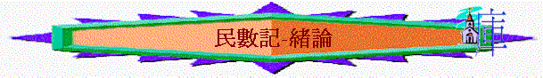

一.作者：摩西
二.寫作時間：出埃及地後第二年，比較民1:1與出40:2，只差一個月，這一個月就是利未記所記載的條例。
三.主題：超越障礙
邁向豐盛
(事實性主題：超越曠野的經過)
1.書名已帶出主題：
〜七十士譯本：Number
----數點 →
為預備起行，邁向迦南豐盛之地
〜希伯來聖經：Bemider
----別米巴
→ 在曠野��(要到迦南地，必經過很多曠野障礙之路)
2.歷史進程也看出
在埃及為奴 → 出埃及得拯救 →
至西乃得律法 → 在西乃建會幕 → 在西乃頒律例→
估計應是時候起行，越過曠野，踏進迦南！
(首年正月)
(第二年正月初一)
∼而當他們從何烈山起行至應許地，也必經過許多曠野路
3.本書內容也說明
A.要數點起行
「以色列人出埃及地後，第二年二月初一日，耶和華在西乃的曠野、會幕中曉諭摩西說：「你要按以色列全會眾的家室、宗族、人名的數目計算所有的男丁。凡以色列中，從二十歲以外，能出去打仗的，你和亞倫要照他們的軍隊數點。」1:1-3
B.要經過曠野
「以色列人就按站往前行，離開西乃的曠野，雲彩停住在巴蘭的曠野。」10:12
「以後百姓從哈洗錄起行，在巴蘭的曠野安營。」12:16
「亞瑪力人和迦南人住在谷中，明天你們要轉回，從紅海的路往曠野去。」14:25
「正月間，以色列全會眾到了尋的曠野，就住在加低斯。米利暗死在那裡，就葬在那裡。」20:1
「以色列人起行，安營在阿伯。又從阿伯起行，安營在以耶亞巴琳，與摩押相對的曠野，向日出之地。」21:10-11
C.已邁向迦南
「以色列人起行，在摩押平原、約但河東，對著耶利哥安營。」22:1
〜從內容而看，本書的事實性主題是選民超越曠野的經過，但很奇怪，從他們起行的何烈山至加低斯巴尼亞(已十分接近應許之地)，只是要十一天的路程，但在民數記的人內容�堙A他們在曠野日子竟然超過38年歲，似乎選民走天路時的困難不是路程的途遠，而是中間發生了很多事情，出現多軟弱，成為我們今天的提醒：如何超越障礙，邁向豐盛。
四.大綱
|
超越障礙，邁向豐盛 (1- 36) |
||||
|
預備起行 |
踏上征途 |
曠野飄流 |
超越障礙 |
邁向豐盛 |
|
1-10:10 |
10:11-14:45 |
15-20:13 |
20:14-25:18 |
26-36 |
五.分段內容
|
經
文 |
地
點 |
時
間 |
事
件 |
啟
發 |
特點 |
分段主題 |
真理重點 |
|
1-10:10 |
在西乃曠野 |
第二年二月初一 |
數民，條例，守節拿細耳人之例... |
未起行前必遇到的問題? -人太多? -方向? -環境? -會幕? -怎樣行? |
-安營在西乃，
未起行 -很多「耶和華
曉諭」 「耶和華怎樣
吩咐摩西，他就怎樣行」字眼 |
一.預備起行 1.民間組織 2.在地生活 3.起行基礎 |
各按各職， ，各人承擔及建立美好神人關係，是起行前必須有的事情 |
|
10:11 - 14:45 |
從西乃--> 加低斯 |
第二年二月二十日 |
三次怨言，十二探子回報，神的審判 |
人是否能按著之前計劃步著而行? |
-是前行 -很多軟弱 |
二.踏上征途 1.起步的順利 2.瞬即的軟弱 3.至終的失敗 |
從以色列人之失敗成為我們的鑑戒 |
|
15 - 20:13 |
從加底斯 -->返回加底斯 |
約四十年? |
條例頒佈，可拉黨叛變，焚紅母牛為灰之例摩西擊磐石 |
在飄流日子，以色例民怎樣生活，是否可放縱呢?從過往失敗中是否得到教訓 |
-不斷在曠野繞
行 -人的本質仍沒
變 |
三.曠野飄流 1.延續的教育 2.延續的叛逆 3.延續的定例 4.延續的管教 |
人在失敗中仍有使命，仍需僅守 |
|
20:14 - 25:18 |
從加底斯-->摩押平原 |
受管教接近38-40年 |
以東不允以色列人過境，火蛇與銅蛇，擊敗亞摩利巴珊王，巴蘭咒詛選民 |
失敗了是否不能再起來呢? |
-不再繞行，管
教日子夠了，再起行 -再起行時仍然有障礙 |
四.超越障礙 1.超越環境 2.超越軟弱 3.超越咒詛 4.超越引誘 |
-失敗不等於不能
起來 -人要跨越障礙需
靠神的恩典與能 力，也加上人的 信靠及忌邪之心 |
|
26 -36 |
摩押平原-->邁向豐盛 |
約出埃第四十年 |
核民，新領袖的興起，分地... |
-已越過日衝是否已經夠了，可停步
呢? -如要再次起步，有什麼目標及預備? |
-較安定在摩押
平原上 -很多吩咐條例
是要在迦南地 才能落實 |
五.邁向豐盛 1.重新組織 2.頒佈軍令 3.回顧前瞻 4.憑信分地 |
-在神路中，可不
斷追求不是以有 為已得著了 -人憑信心預備踏
上佳美之地 |
六.新約價值
1.基督的預表
銅蛇：「摩西在曠野怎樣舉蛇，人子也必照樣被舉起來...」約3:14-15
2.屬靈的鑑戒
「但他們中間，多半是神不喜歡的人，所以在曠野倒斃。這些事都我們的鑑戒
，叫我們不要貪戀惡事...也不要拜偶像...也不要行姦淫...也不要試探主...
也不要發怨言...他們遭遇這些事，都要作為鑑戒，並且寫在經上，正是警戒我們這末世的的人。」林前10:5-12
「神四十年之久，又厭煩誰呢。豈不是那些罪...豈不是向那些不信從的人麼。這樣
看來他們不能進入安息，是因為不信的緣故了。」來3:17
3.事奉的榜樣
「摩西為僕人，在神的全家誠然盡忠，為要証明將來必傳說的事。」來3:5